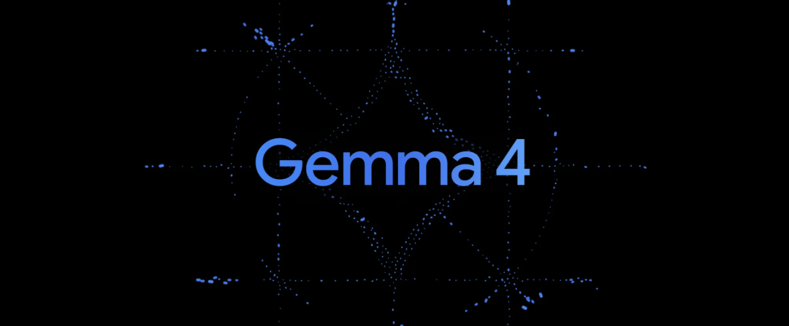

昨天聊了 Gemma 4，今天教你把它装进本地电脑里。
养龙虾终于不用花钱了。
谷歌最新的开源模型 Gemma 4，原生支持 function calling。装在你自己的电脑上，接入 OpenClaw，token 成本直接归零。
划重点，Gemma 4 是 Gemma 家族第一次用 Apache 2.0 协议开源。商用、魔改、二次分发，都没问题。再加上 Ollama 最近更新了大版本。Apple Silicon 上直接用苹果自家的 MLX 框架推理，速度翻倍。
三步搞定。Mac、Windows、Linux 都可以。
先看看你的电脑有多少内存。

Gemma 4 一共四个版本，下面都以 4-bit 量化为例。
最小的 E2B，23 亿参数，4-bit 量化后约 4 GB 内存。支持图片、音频输入，128K 上下文。手机和树莓派都能跑。
E4B，45 亿参数，约 5.5 GB。同样支持图片和音频，128K 上下文。适合日常聊天。
26B 是混合专家架构（MoE），总参数 252 亿，每次推理只激活 38 亿。4-bit 量化后占 16-18 GB 内存。256K 上下文，支持图片，不支持音频。速度接近小模型，质量接近满血版，性价比最高。24 GB 内存的 Mac 或 24 GB 显存的显卡就能带得动。
满血版 31B，307 亿参数全激活。17-20 GB 内存。256K 上下文。Arena AI 开源排行榜第三，AIME 2026 数学推理 89.2%，编程 LiveCodeBench 80.0%。跑分最猛，24 GB 能跑但比较紧，32 GB 更舒服。

一句话总结，「4 GB 跑 E2B，6 GB 跑 E4B，18 GB 跑 26B，20 GB 以上跑 31B。」
Mac 用户，先去 ollama.com 下载、安装 Ollama。用 Homebrew 也行。
brew install --cask ollama-app
Ollama 是目前跑本地模型最简单的工具（之一）。模型下载、推理引擎、API 服务，一个 App 就搞定。

装好后启动 Ollama。打开终端，运行：
open -a Ollama
菜单栏会出现一个羊驼图标，等几秒钟初始化完成。根据你的内存选一个模型拉取。以 26B 为例。
ollama run gemma4:26b

Ollama 会自动下载模型并启动对话。26B 大约 18 GB，耐心等。
下载完成后直接进入聊天界面。随便问一句，看到回答就成功了。
可以用下面这个命令查看模型运行状态。
ollama ps
你会看到 CPU/GPU 的推理分配比例，比如「14%/86% CPU/GPU」。以 Apple Silicon 为例，大部分计算跑在 GPU 上，速度比纯 CPU 快得多。
三步，搞定。
Windows 用户同理，先下载安装 Ollama。可以直接用客户端，也可以打开 PowerShell，一行命令搞定。
irm https://ollama.com/install.ps1 | iex

装完后打开一个新的 PowerShell 窗口，运行：
ollama run gemma4:26b
有 NVIDIA 显卡的话，Ollama 会自动调用 CUDA 加速。没独显也能跑，就是慢一些。
后面是一样的流程。
NVIDIA 用户划重点。Ollama 0.19 新增了 NVFP4 格式支持，用更少的显存跑模型，精度损失很小。RTX 40 系及以上的显卡自动生效。
如果你已经养了一只龙虾，不管是在自己电脑上还是云服务器上，上面这些命令完全不用自己敲。直接给龙虾发消息，它会帮你搞定。
以一台云服务器上的 OpenClaw 为例。全程不碰终端。
先对龙虾说，「在服务器上安装 Ollama。运行这条命令：curl -fsSL https://ollama.com/install.sh | sh」。
龙虾先是发现缺少 zstd 依赖，自己装好之后重新运行安装脚本。

接着拉取模型。「下载 Gemma 4 26B 模型：ollama pull gemma4:26b」
17 GB 的模型文件，校验通过。

然后让它测试。「跟 Gemma 4 聊一句试试：ollama run gemma4:26b "你好，你是什么模型？简单介绍一下自己。"」
Gemma 4 跑起来了。

但纯 CPU 推理，26B 属实有点勉强。

让龙虾换成 E4B。

速度快多了。

理论上还能更进一步。
让龙虾把自己的模型后端切到本地 Gemma 4，API 端点指向 localhost:11434，从此不再需要云端 API。但更推荐满血版作为主力模型，小模型更适合端侧。
龙虾帮你部署了一个免费模型，最后还能把自己也接上去。
最后附上 Ollama 常用命令。
ollama list # 查看已下载的模型
ollama ps # 查看正在运行的模型和内存占用
ollama run gemma4:26b # 启动对话
ollama stop gemma4:26b # 卸载模型释放内存
ollama pull gemma4:26b # 更新到最新版本
ollama rm gemma4:26b # 删除模型
我是木易，Top2 + 美国 Top10 CS 硕，现在是 AI 产品经理。
关注「AI信息Gap」，让 AI 成为你的外挂。
